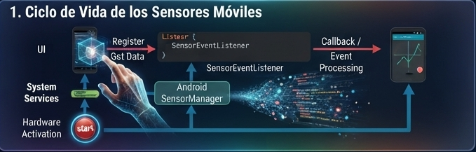

3. Gestión de Sensores en Dispositivos Móviles
Definición de Sensores
Los sensores son componentes de hardware integrados en los dispositivos móviles que detectan eventos o cambios físicos en el entorno (movimiento, luz, campo magnético, ubicación) y convierten dichas magnitudes físicas en señales eléctricas legibles por el procesador y el software de la aplicación.
Tipos de Sensores en Dispositivos Móviles
- Sensores de Movimiento: Acelerómetro (mide aceleración lineal en 3 ejes), giroscopio (mide velocidad de rotación) y podómetro (conteo de pasos).
- Sensores de Posición: Magnetómetro (brújula digital) y GPS (geolocalización por constelación de satélites).
- Sensores Ambientales: Sensor de luz ambiental (ajuste automático de brillo de pantalla), barómetro (presión atmosférica) y sensor de proximidad (desactiva pantalla en llamadas).
Proceso de Gestión de Sensores
El ciclo de vida para utilizar sensores consta de tres etapas fundamentales:
- Habilitación: Solicitud de permisos en tiempo de ejecución (ej.
ACCESS_FINE_LOCATION) y verificación de disponibilidad del hardware mediante el administrador de sensores (SensorManager). - Obtención de Información: Registro de escuchas o listeners (
SensorEventListener) para capturar flujos de datos continuos o cambios de estado con frecuencias configurables (ej.SENSOR_DELAY_NORMAL). - Procesamiento de Información: Filtrado de ruido, conversión de coordenadas, cálculo de vectores y activación de lógica de negocio en la interfaz de usuario.

Video Explicativo Recomendado
Profundiza en los conceptos clave de este tema a través de nuestra selección audiovisual en YouTube.
▶ Ver video explicativo en YouTube